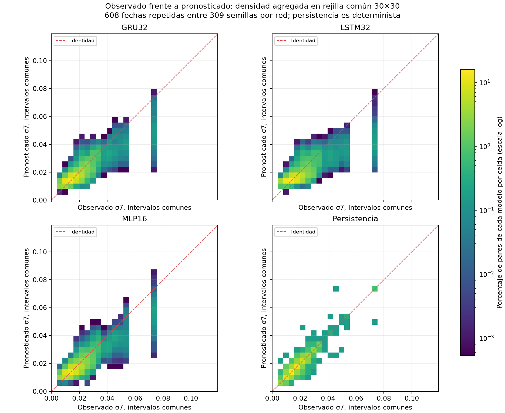
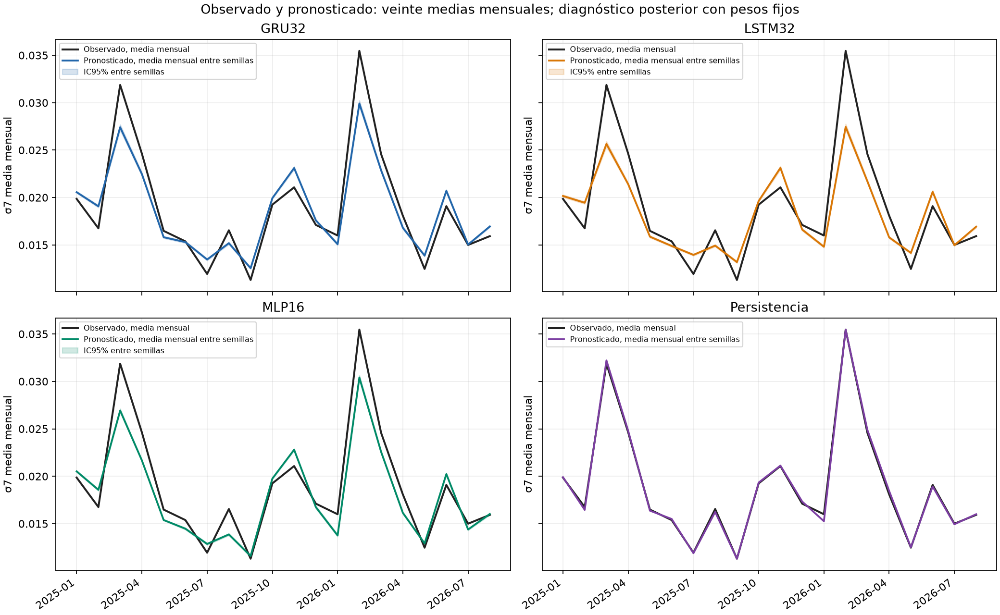
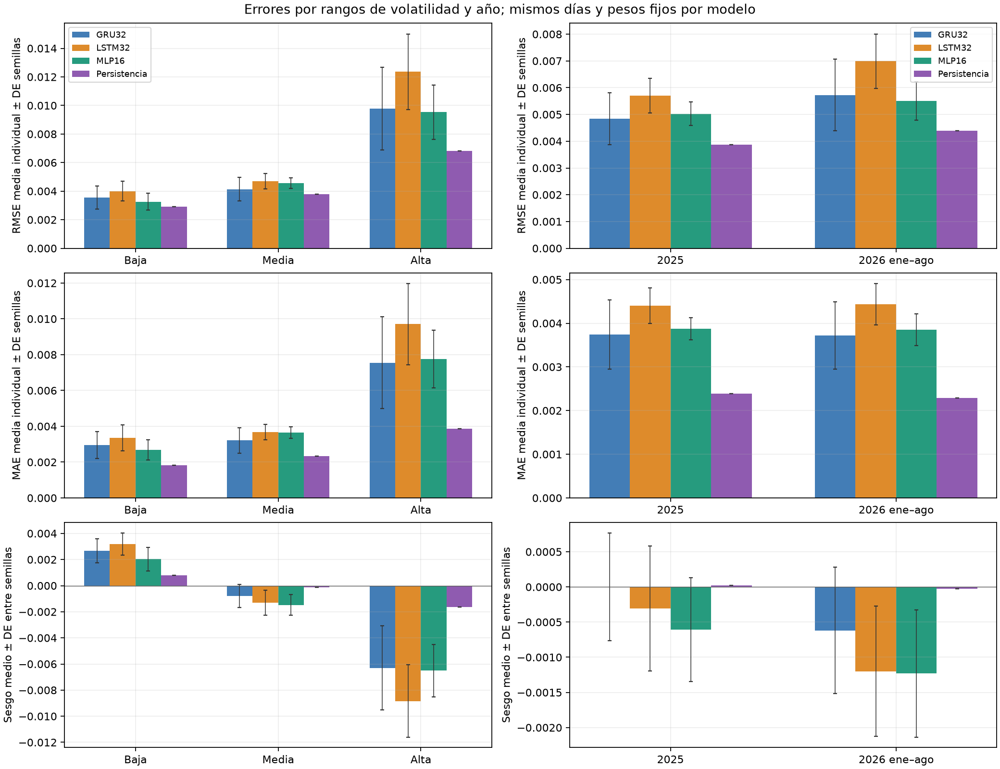
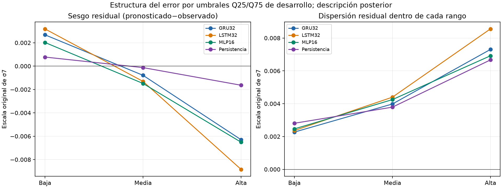
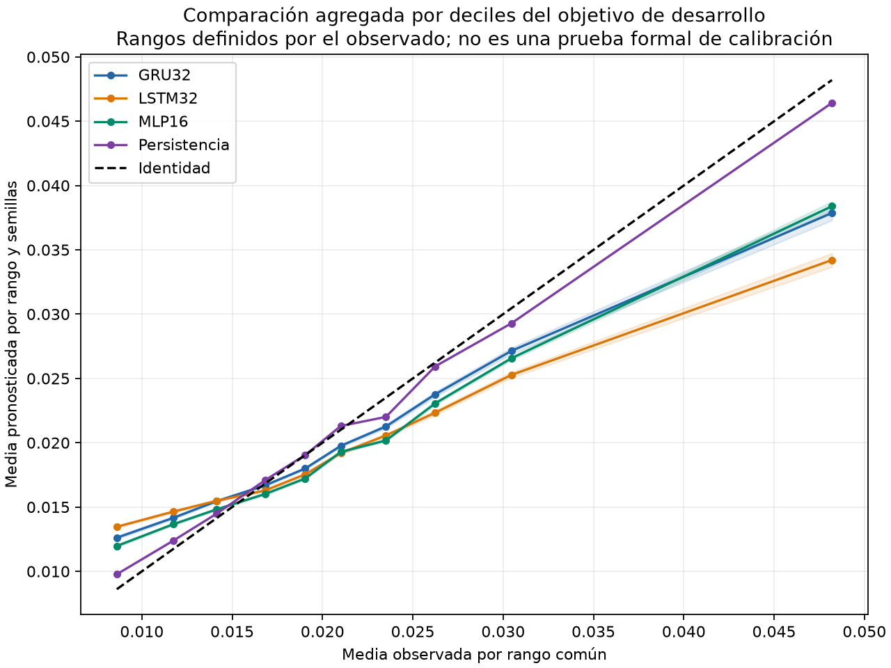

12. Análisis de errores con predicciones congeladas#
Este suplemento completa el análisis cualitativo y por segmentos de §4.4 de la guía para GRU32, LSTM32 y MLP16, con persistencia como referencia. Utiliza las predicciones ya cerradas del benchmark principal de 608 fechas. No vuelve a entrenar o pronosticar, no selecciona otras semillas y no modifica la tabla final de métricas. Es un análisis descriptivo posterior al experimento.
La verificación de invariancia compara 928 corridas × seis métricas = 5.568 valores, incluyendo la referencia determinista. La discrepancia numérica máxima es cero en las seis métricas. Verifica antes y después los hashes de 106 archivos: 34 fuentes científicas, los 34 archivos de cada espejo original y cuatro entradas privadas cerradas. No cambia ningún archivo del experimento principal.
12.1. Comparación visual entre observado y pronosticado#
La primera figura representa todas las predicciones guardadas en una rejilla común de 30×30 intervalos, definida con desarrollo. El color indica el porcentaje de pares dentro de cada familia y usa la misma escala en los cuatro paneles. La identidad representa coincidencia entre observado y pronosticado. Las redes tienen 309 inicializaciones sobre las mismas 608 fechas; persistencia tiene una sola trayectoria determinista. Esas repeticiones no se interpretan como nuevas fechas independientes.

La dispersión alrededor de la identidad y las predicciones inferiores al observado en la zona alta muestran errores que el promedio global no localiza. Los conteos por intervalo conservan todos los pares y los eventuales desbordamientos; no publican filas diarias individuales.
La segunda figura ofrece veinte medias mensuales. La serie observada es común a las cuatro referencias. Las líneas de las redes promedian los pronósticos mensuales de sus inicializaciones; las bandas son IC marginales entre semillas de esas medias, condicionados al calendario. Estas líneas ilustrativas no sustituyen la RMSE de modelos individuales ni constituyen un nuevo ensemble evaluado. El promedio mensual suaviza picos y puede ocultar errores diarios que la densidad y el análisis por rangos ayudan a identificar.

Los agregados mensuales permiten verificar la figura. La cercanía de persistencia a la media mensual se relaciona con el objetivo móvil solapado y la agregación; no demuestra predicción diaria perfecta.
12.2. Rangos comunes de volatilidad y robustez por año#
Los límites proceden de las 716 etiquetas válidas de desarrollo 2023–2024, usando interpolación lineal de cuantiles:
Rango descriptivo del objetivo |
Regla común |
Fechas de evaluación |
|---|---|---|
Bajo |
σ₇ ≤ Q25 = 0,0145339530 |
233 |
Medio |
Q25 < σ₇ ≤ Q75 = 0,0263210305 |
288 |
Alto |
σ₇ > Q75 |
87 |
Los umbrales y su procedencia se aplican de forma idéntica a todos los modelos y semillas. Son rangos del valor de volatilidad observado, no estados alcistas/bajistas del mercado. La pertenencia usa retrospectivamente el resultado observado para diagnosticar errores; no estuvo disponible como entrada del pronóstico. Las fechas y errores no se excluyen por su magnitud.
RMSE media de modelos individuales por rango y año:
Segmento |
Fechas |
GRU32 |
LSTM32 |
MLP16 |
Persistencia |
|---|---|---|---|---|---|
Volatilidad baja |
233 |
0,00355362 |
0,00400139 |
0,00326512 |
0,00290665 |
Volatilidad media |
288 |
0,00413626 |
0,00468661 |
0,00455793 |
0,00378439 |
Volatilidad alta |
87 |
0,00979206 |
0,01235534 |
0,00952800 |
0,00682763 |
2025 completo |
365 |
0,00483482 |
0,00570233 |
0,00502959 |
0,00386491 |
Enero–agosto de 2026 |
243 |
0,00572807 |
0,00699028 |
0,00550714 |
0,00439631 |
Persistencia conserva menor RMSE puntual en los tres rangos y ambos años. El orden entre redes varía: GRU tiene menor RMSE neuronal en el rango medio y en 2025; MLP en los rangos bajo/alto y en enero–agosto de 2026. No se redefine el baseline con ese orden retrospectivo: GRU sigue siendo la selección realizada con CV. Las diferencias descriptivas por segmentos no son nuevos contrastes confirmatorios.

Las barras de error representan DE entre semillas, no incertidumbre temporal ni intervalos simultáneos. El resumen de segmentos incluye seis métricas y medidas residuales, media/DE/IC marginales y cobertura; las 24.128 filas por corrida y segmento conservan la verificación individual. Los promedios de RMSE mensual o por rango no se suman para reconstruir la RMSE global: la raíz se calcula dentro de cada cohorte.
12.3. Sesgo, dispersión y casos difíciles#
Se define residuo = pronosticado − observado. En el rango bajo las cuatro referencias presentan sesgo medio positivo; en el alto, negativo. Las redes tienden a sobreestimar valores bajos y a subestimar los altos. En el rango alto el sesgo medio es −0,00629720 en GRU, −0,00883592 en LSTM y −0,00650984 en MLP, frente a −0,00163575 en persistencia. La dispersión residual también aumenta en el rango alto. Esto describe variación del error con el nivel del objetivo y un margen de mejora estructural; no constituye una prueba nueva de heterocedasticidad.

La comparación adicional por diez rangos usa los deciles de desarrollo y la misma regla para todas las familias. Muestra medias observadas/pronosticadas por intervalo, con bandas marginales entre semillas. Es una comparación condicionada al observado, no una prueba formal de calibración probabilística ni un ajuste posterior de los pronósticos.

Los agregados por decil suprimen medias si un intervalo contiene menos de cinco fechas. La asociación descriptiva entre error absoluto y objetivo no añade p-valores: conserva la dependencia de las fechas y el carácter posterior del análisis.
Para localizar casos difíciles se ordenaron después de cerrar el benchmark los veinte meses por el promedio simple de la RMSE media de las tres redes. Se muestran los tres primeros; esta selección es ilustrativa y no cambia muestras, pesos, métricas o pruebas:
Mes |
GRU32 RMSE |
LSTM32 RMSE |
MLP16 RMSE |
Persistencia RMSE |
|---|---|---|---|---|
Febrero de 2026 |
0,01271323 |
0,01616913 |
0,01089583 |
0,00973215 |
Marzo de 2025 |
0,00781669 |
0,00968715 |
0,00837512 |
0,00588350 |
Abril de 2025 |
0,00577996 |
0,00699157 |
0,00605050 |
0,00602926 |
Febrero de 2026 y marzo de 2025 reúnen los mayores errores bajo esa regla. Abril muestra una inversión local: GRU obtiene menor RMSE mensual que persistencia. Ese resultado se conserva junto al adverso global, sin inferir significación del contraste mensual ni atribuir causalmente los errores a un evento económico no analizado.
La descomposición descriptiva de sumas de cuadrados asigna, para RMSE, 75,44 % a la variación dentro de familias entre semillas y 24,56 % a la variación entre medias de familias. Es una identidad aritmética sobre las tres redes y 309 inicializaciones equilibradas, no un ANOVA inferencial ni una descomposición de incertidumbre entre mercados.
12.4. Alcance y reproducción del suplemento#
El resumen, el manifiesto de publicación y las fuentes y hashes vinculan el suplemento al experimento principal. Sus 17 archivos más el manifiesto se publican como agregados y figuras, conservando privadamente las observaciones y pronósticos diarios. El código y sus pruebas están en scripts/build_e1_frozen_error_analysis.py y tests/test_e1_frozen_error_analysis.py; BUILD.md describe su ejecución sobre una salida nueva.
Estos diagnósticos completan la evaluación por segmentos y las visualizaciones del trío actual sin modificar sus resultados finales. El calendario sigue siendo histórico y conocido. Describir mejor los errores no crea una validación temporal independiente, no acredita potencia temporal nueva y no autoriza seleccionar otra receta con el mismo test. Las oportunidades de modelado que surjan requerirán un diseño y una evaluación propios.